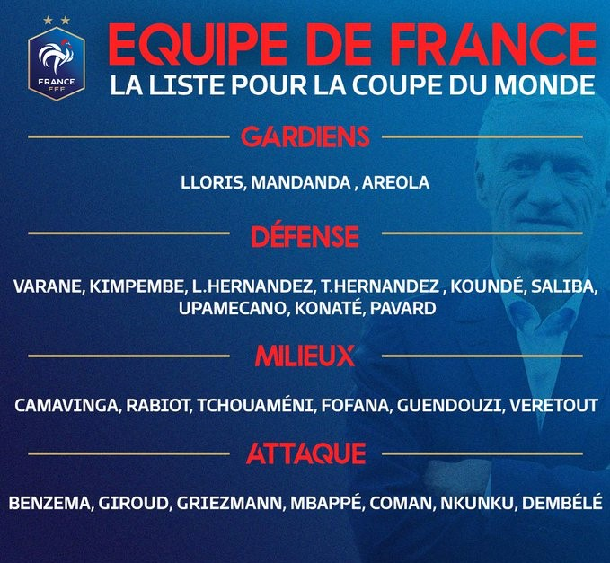

La France Championne du Monde en titre espère garder son titre et ramener une troisième fois le trophée de la Coupe du monde à la maison.
Le parcours de l’équipe de France de football lors de la Coupe du monde de football 2022 se déroule après l'échec à l'Euro 2020 où le premier tour contre l'Allemagne, la Hongrie et le Portugal a été compliqué, l'équipe de France étant éliminée en huitième de finale par la Suisse (3-3, après prolongation, défaite 4-5 aux tirs au but) en juin 2021. En octobre 2021, les Bleus remportent la Ligue des nations en s'imposant face à la Belgique puis l'Espagne. En novembre 2021, elle se qualifie directement pour la Coupe du monde 2022 au Qatar, grâce à sa première place du Groupe D de la zone Europe, ce qui lui permet de disputer sa seizième Coupe du Monde de son histoire.
La liste de joueurs sélectionnés est dévoilée le mercredi 9 novembre 2022 par Didier Deschamps lors du Journal de 20 heures de TF1. Elle compte alors 25 joueurs. On note l'absence des milieux de terrain N'Golo Kanté (blessure aux ischio-jambiers)5 et Paul Pogba (blessure au genou), champions du monde en 2018, contraints de déclarer forfait.
Le 14 novembre, premier jour du rassemblement et date limite pour le dépôt de la liste définitive auprès de la FIFA, Deschamps appelle en renfort un 26e et dernier joueur, Marcus Thuram, qui vient ainsi compléter l'effectif. En outre, le même jour, Axel Disasi est appelé pour remplacer Presnel Kimpembe, forfait8. Le 15 novembre, veille du départ pour le Qatar, la Fédération française de football annonce le forfait de Christopher Nkunku, victime d'une entorse au genou gauche après un choc reçu à l'entraînement. Son remplaçant, Randal Kolo Muani, rejoint la sélection au Qatar le 17 novembre. La veille du début de la compétition, Karim Benzema, ballon d'or 2022, déclare lui aussi forfait à la suite d'une déchirure à la cuisse gauche. Ce dernier n'est pas remplacé, la liste définitive est donc composée de 25 joueurs, mais Karim Benzema continue à faire partie de la liste officielle enregistrée auprès de la FIFA. Le 22 novembre à la 9e minute du premier match de la France, sur l'action où l'Australie ouvre le score, Lucas Hernandez prend un mauvais appui et se blesse sévèrement au genou droit, il doit quitter le terrain et est forfait pour le reste de la compétition.
Liste définitive :
Gardien
- Hugo Lloris - Tottenham
- Steve Mandanda - Stade Rennais
- Alphonse Areola - West Ham
Défenseur
- Benjamin Pavard - Bayern Munich
- Axel Disasi - Monaco
- Raphaël Varane - Manchester United
- Jules Koundé - Barcelone
- William Saliba - Arsenal
- Dayot Upamecano - Bayern Munich
- Lucas Hernandez - Bayern Munich
- Théo Hernandez - AC Milan
- Ibrahima Konaté - Liverpool
Milieux
- Mattéo Guendouzi - Marseille
- Aurélien Tchouaméni - Real Madrid
- Youssouf Fofana - Monaco
- Adrien Rabiot - Juventus
- Jordan Veretout - Marseille
- Eduardo Camavinga - Real Madrid
Attaquant
- Antoine Griezmann - Atlético Madrid
- Olivier Giroud - AC Milan
- Kylian Mbappé - Paris Saint-Germain
- Ousmane Dembélé - Barcelone
- Randal Kolo Muani - Francfort
- Kingsley Coman - Bayern Munich
- Marcus Thuram - Borussia Mönchengladbach
- Karim Benzema - Real Madrid
Sélectionneur
- Didier Deschamps
compétition
Format et tirage au sort
Le tirage au sort de la Coupe du monde a lieu le vendredi 1er avril 2022 au Centre des expositions à Doha. C’est le classement de mars qui est pris en compte, la sélection se classe 3e du classement FIFA, et est placée dans le chapeau 1. La France est placée dans le Groupe D.
- France
- Australie
- Danemark
- Tunisie
Premier tour - Groupe D
Classement
| pts | J. | G. | N. | P. | p. | c. | +/- | |||
|---|---|---|---|---|---|---|---|---|---|---|
| 1 | France | 6 | 3 | 2 | 0 | 1 | 6 | 3 | +3 | |
| 2 | Australie | 6 | 3 | 2 | 0 | 1 | 3 | 4 | -1 | |
| 3 | Tunisie | 4 | 3 | 1 | 1 | 1 | 1 | 1 | 0 | |
| 4 | Danemark | 1 | 3 | 0 | 1 | 2 | 1 | 3 | -2 |
Résultats et scores
- Danemark 0 - 0 Tunisie
- France 4-1 Australie
- Tunisie 0-1 Australie
- France 2-1 Danemark
- Australie 1-0 Danemark
- Tunisie 1-0 France
Phase à élimination directe
- Huitième de Finale : France - Pologne : 3-1
- Quart de Finale : Angleterre - France : 1-2
- Demi-Finale : France - Maroc : 2-0
- Finale : Argentine - France : 3-3 (Tir au but : 4-2)